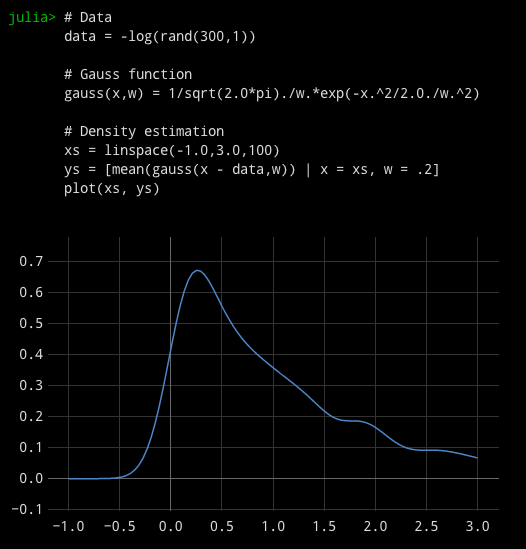
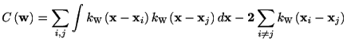
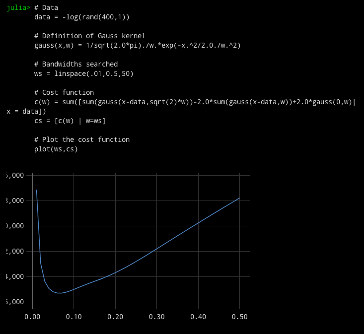
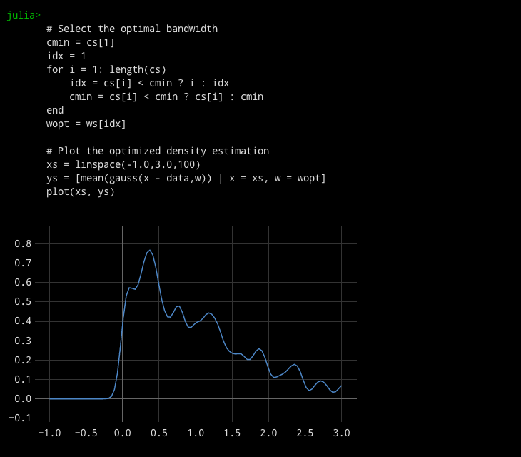

Matlabtic(); for i=1:1e8; 1+1; end; toc()
elapsed time: 0.22376203536987305 seconds
tic; for i=1:1e8, 1+1; end; toc;
Elapsed time is 3.191013 seconds. Estimation of a probability density function from sampled data is often fundamental in statistical analysis. There are parametric and non-parametric approaches. Here we consider non-parametric methods. The most popular non-parametric methods are a histogram and kernel density estimation method. Here we consider the kernel density estimation and its optimization.
Data generation. Generate exponentially distributed data.
# Data
data = -log(rand(300,1))# Gauss function gauss(x,w) = 1/sqrt(2.0*pi)./w.*exp(-x.^2/2.0./w.^2)
the kernel density estimator is defined as
mean(gauss(x - data,w))where x is the point of estimation. To obtain the Gauss
function, a built-in gamma function may be used.
Use of comprehensions is powerful to create an array of function returns.
[mean(gauss(x - data,w)) | x = linspace(-1.0,3.0,100), w = .1]
Summary
# Data data = -log(rand(300,1))# Gauss function gauss(x,w) = 1/sqrt(2.0*pi)./w.*exp(-x.^2/2.0./w.^2)
# Density estimation
xs = linspace(-1.0,3.0,100)
ys = [mean(gauss(x - data,w)) | x = xs, w = .2] plot(xs, ys)

The kernel density estimation depends on the choice of
bandwidth. It is possible to select an optimal bandwidth according to the
data. The optimal bandwidth is given by the one that minimizes the
following formula *

where k_w is a kernel function with a bandwidth w. Here we consider the
gauss kernel. This formula can be further simplified for a symmetric
kernel. In addition, an explicit compacted formula is available for the
gauss kernel function (see ref *). Here for simplicity and generality we
compute the above formula.
To compute the above formula, we consider the sum of the gauss kernel
function over the data points
[sum([sum(gauss(x - data, w)) | x = data])| w=0.1]
if a bandwidth is 0.1.
We compute the cost functions for different bandwidths. Here thec(w) = sum([sum(gauss(x-data,sqrt(2)*w))-2.0*sum(gauss(x-data,w))+2.0*gauss(0,w)| x = data])
# Bandwidths searchedWe want to obtain w that minimizes this formula. Currently, the Julia's min function does not return the index of the minimum element. There are different ways. Here the we use the "ternary operator" ? to obtain the optimal bandwidth. It is useful as a short if-clause.
ws = linspace(.01,0.5,50)
# Cost function
cs =[c(w) | w=ws]
We will use wopt as the optimal bandwidth of kernel density estimation.cmin = c[1]
idx = 1
for i = 1: length(c)
idx = c[i] < cmin ? i : idx cmin = c[i] < cmin ? c[i] : cmin
end
wopt = ws[idx]
# Data
data = -log(rand(400,1))
# Definition of Gauss kernelgauss(x,w) = 1/sqrt(2.0*pi)./w.*exp(-x.^2/2.0./w.^2)# Bandwidths searched
ws = linspace(.01,0.5,50)
# Cost functionc(w) = sum([sum(gauss(x-data,sqrt(2)*w))-2.0*sum(gauss(x-data,w))+2.0*gauss(0,w)| x = data])
cs =[c(w) | w=ws]
# Plot the cost function
plot(ws,cs)
# Select the optimal bandwidth
cmin = cs[1]
idx = 1
for i = 1: length(cs)
idx = cs[i] < cmin ? i : idx cmin = cs[i] < cmin ? cs[i] : cmin
end
wopt = ws[idx]
# Plot the optimized density estimation
xs = linspace(-1.0,3.0,100)
ys = [mean(gauss(x - data,w)) | x = xs, w = wopt] plot(xs, ys)

